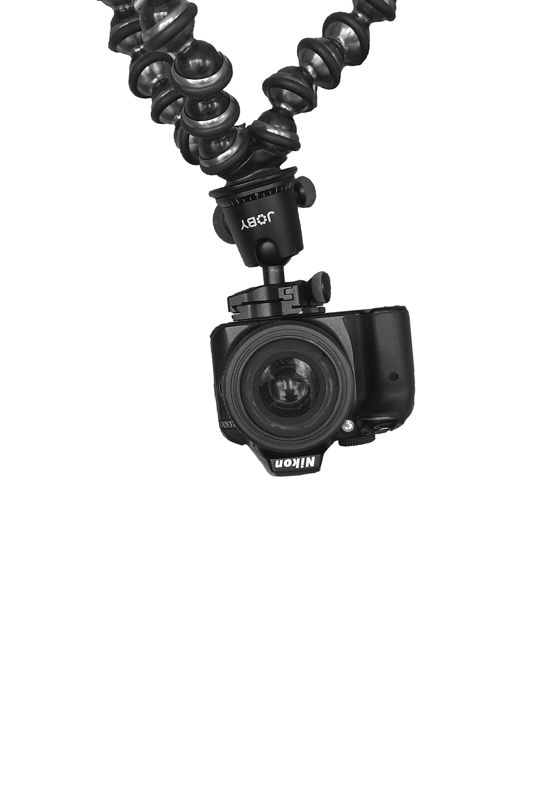

photos

videos
moscow

unseen

nikita ivanov
My name is Nikita Ivanov. I'm an amateur photographer based in Moscow and Lausanne. I say amateur but, in the future, I would like to make this passion a full-time job, hence this portifolio. As you may noticed my photos mostly consist of portraits. My style is fairly simple. I don't pass my photos through Photoshop, only Lightroom. I try to stay as real and natural as possible. I only concentrate on the colors.
© Nikita Ivanov 2020